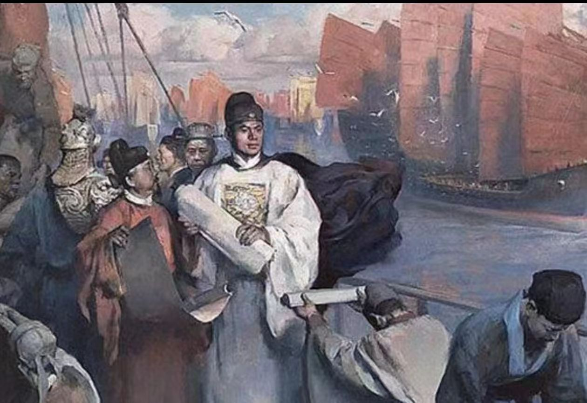

郑和下西洋是中国古代航海史上的壮丽篇章，展示了明朝的航海技术和外交能力。从永乐三年（1405年）至宣德八年（1433年），郑和率领庞大的船队七次远航，访问了亚非三十多个国家和地区，开创了中国古代海上丝绸之路的鼎盛时期。
郑和的船队规模庞大，船只数量众多，船体结构先进，配备了当时最先进的航海技术和装备。船队中不仅有宝船、马船、粮船、战船等各种类型的船只，还有大量的船员、士兵和外交使节。这样的规模和实力，使得郑和的船队成为了当时世界上最强大的海上力量之一。
郑和下西洋的目的不仅仅是进行贸易和外交活动，更是为了展示明朝的威严和实力，加强与亚非各国的联系和合作。在航行过程中，郑和船队进行了大量的贸易活动，带回了大量的珍宝和特产，丰富了中国的经济和文化。同时，郑和还通过外交手段，解决了与一些国家的争端和矛盾，增强了中国的国际地位。
郑和下西洋的意义不仅在于经济和外交方面，更在于文化和科技方面。船队的航行促进了中国与亚非各国的文化交流，推动了中华文化的传播和影响。同时，船队还带回了许多先进的技术和知识，推动了中国航海、造船、天文、地理等领域的发展。
总之，郑和下西洋是中国古代航海史上的辉煌篇章，展示了明朝的航海技术和外交能力，推动了中国与亚非各国的经济、文化、科技交流和发展。这一历史事件不仅具有深远的历史意义，也为我们今天的发展提供了宝贵的启示和借鉴。

靖难之役，又称靖难之变，是建文元年（1399年）到建文四年（1402年）明朝统治阶级内部争夺帝位的战争。
明太祖朱元璋在位时把儿孙分封到各地做藩王，藩王势力日益膨胀。因太子朱标早逝，洪武三十一年（1398年），皇太孙朱允炆继位，是为建文帝。建文帝与亲信大臣齐泰、黄子澄等采取一系列削藩措施。与此同时，也在北平周围及城内部署兵力，又以防边为名，把明太祖第四子燕王朱棣的护卫精兵调出塞外戍守，准备削除燕王。
朱棣于建文元年（1399年）起兵反抗，随后挥师南下，史称“靖难之役”。建文帝起用老将耿炳文统兵北伐，又派李景隆继续讨伐，而建文帝也缺乏谋略，致使主力不断被歼。朱棣适时出击，灵活运用策略，经几次大战消灭南军主力，最后乘胜进军，于建文四年（1402年）攻下帝都应天（今南京） [1]。
战争历时四年（1399-1402年）。战乱中建文帝下落不明，或说于宫中自焚死，或说由地道逃去，隐藏于云、贵一带为僧。同年，朱棣即位，是为明成祖。
朱棣进入南京后，大肆杀戮曾为朱允炆出谋划策及不肯降附的文臣武将。齐泰、黄子澄、方孝孺、练子宁、陈迪等先后被杀 [176-177]。靖难之役给明初刚刚得到恢复的社会经济又带来不小的破坏，尤其是战争剧烈的地区，所受的破坏更大，形成“淮以北鞠为茂草”的情况。 [2]